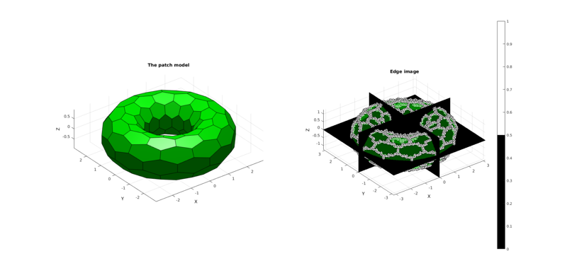
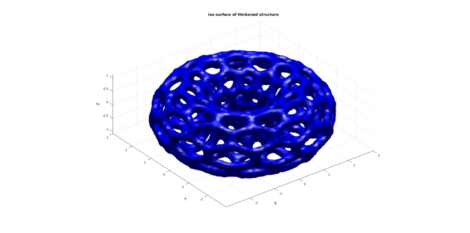

patch2EdgeIm
Below is a demonstration of the features of the patch2EdgeIm function
Contents
clear; close all; clc; % Plot settings for the examples below figColor='w'; figColorDef='white'; fontSize=10; faceAlpha1=1; faceAlpha2=0.3;
EXAMPLE 1: CONVERTING A PATCH TYPE SURFACE TO AN EDGE IMAGE WITH DESIRED SIZE, VOXEL SIZE, ORIGIN AND EDGE SUBDEVISIONS
Defining an example surface model, in this case a torus consisting of hexagonal faces mesh
% Defining a deformed and rotated torus shape r=1; %Sphere radius rc=2; %Central radius nr=10; nc=12; ptype='honey'; [F,V]=patchTorus(r,nr,rc,nc,ptype);
Setting control parameters
% Defining the full set of possible control parameters voxelSize=0.1; % The output image voxel size. imOrigin=min(V,[],1)-3*voxelSize; imMax=max(V,[],1)+3*voxelSize; imSiz=round((imMax-imOrigin)/voxelSize); imSiz=imSiz([2 1 3]); %Image size (x, y corresponds to j,i in image coordinates, hence the permutation) n=50; % Using |patch2EdgeIm| function to convert patch data to image data [M,~]=patch2EdgeIm(F,V,voxelSize,imOrigin,imSiz,n);
Plotting the results
hf1=figuremax(figColor,figColorDef); subplot(1,2,1); title('The patch model','FontSize',fontSize); xlabel('X','FontSize',fontSize);ylabel('Y','FontSize',fontSize); zlabel('Z','FontSize',fontSize); hold on; patch('Faces',F,'Vertices',V,'FaceColor','g','EdgeColor','k','FaceAlpha',faceAlpha1); camlight('headlight'); lighting flat; axis equal; view(3); axis tight; grid on; set(gca,'FontSize',fontSize); subplot(1,2,2); title('Edge image','FontSize',fontSize); xlabel('X','FontSize',fontSize);ylabel('Y','FontSize',fontSize); zlabel('Z','FontSize',fontSize); hold on; patch('Faces',F,'Vertices',V,'FaceColor','g','EdgeColor','none','FaceAlpha',faceAlpha2); L_plot=false(size(M)); L_plot(:,:,round(size(M,3)/2))=1; [Fm,Vm,Cm]=ind2patch(L_plot,double(M),'sk'); [Vm(:,1),Vm(:,2),Vm(:,3)]=im2cart(Vm(:,2),Vm(:,1),Vm(:,3),voxelSize*ones(1,3)); Vm=Vm+imOrigin(ones(size(Vm,1),1),:); patch('Faces',Fm,'Vertices',Vm,'FaceColor','flat','CData',Cm,'EdgeColor','k','FaceAlpha',faceAlpha1); L_plot=false(size(M));L_plot(round(size(M,1)/2),:,:)=1; [Fm,Vm,Cm]=ind2patch(L_plot,M,'si'); [Vm(:,1),Vm(:,2),Vm(:,3)]=im2cart(Vm(:,2),Vm(:,1),Vm(:,3),voxelSize*ones(1,3)); Vm=Vm+imOrigin(ones(size(Vm,1),1),:); patch('Faces',Fm,'Vertices',Vm,'FaceColor','flat','CData',Cm,'EdgeColor','k','FaceAlpha',faceAlpha1); L_plot=false(size(M));L_plot(:,round(size(M,2)/2),:)=1; [Fm,Vm,Cm]=ind2patch(L_plot,M,'sj'); [Vm(:,1),Vm(:,2),Vm(:,3)]=im2cart(Vm(:,2),Vm(:,1),Vm(:,3),voxelSize*ones(1,3)); Vm=Vm+imOrigin(ones(size(Vm,1),1),:); patch('Faces',Fm,'Vertices',Vm,'FaceColor','flat','CData',Cm,'EdgeColor','k','FaceAlpha',faceAlpha1); [Fm,Vm,Cm]=ind2patch(M>0,M,'v'); [Vm(:,1),Vm(:,2),Vm(:,3)]=im2cart(Vm(:,2),Vm(:,1),Vm(:,3),voxelSize*ones(1,3)); Vm=Vm+imOrigin(ones(size(Vm,1),1),:); patch('Faces',Fm,'Vertices',Vm,'FaceColor','flat','CData',Cm,'EdgeColor','k','FaceAlpha',faceAlpha1); colormap(gray(2)); caxis([0 1]); colorbar; axis equal; view(3); axis tight; grid on; set(gca,'FontSize',fontSize); drawnow;
EXAMPLE 2: THICKNENING OF THE RESULT AND CREATING SURFACE STRUCTURES
%Create grow kernel k=ones(3,3,3); k=k./sum(k(:)); M = convn(M,k,'same'); M=M./max(M(:)); %Build iso-surface [I,J,K]=ndgrid(1:1:size(M,1),1:1:size(M,2),1:1:size(M,3)); [X,Y,Z]=im2cart(I,J,K,voxelSize*ones(1,3)); X=X+imOrigin(1); Y=Y+imOrigin(2); Z=Z+imOrigin(3); isoLevel=0.25; [Fi,Vi] = isosurface(X,Y,Z,M,isoLevel); %main isosurface Fi=fliplr(Fi); %Flip so normal faces outward [Fc,Vc] = isocaps(X,Y,Z,M,isoLevel); %Caps to close the shape Fc=fliplr(Fc); %Flip so normal faces outward %Join model segments Vs=[Vi;Vc]; Fs=[Fi;Fc+size(Vi,1)]; %Merge nodes [~,ind1,ind2]=unique(pround(Vs,5),'rows'); Vs=Vs(ind1,:); Fs=ind2(Fs); cPar.Method='HC'; cPar.n=25; [Vs]=patchSmooth(Fs,Vs,[],cPar);
Plotting the results
hf2=figuremax(figColor,figColorDef); title('iso-surface of thickened structure','FontSize',fontSize); xlabel('X','FontSize',fontSize);ylabel('Y','FontSize',fontSize); zlabel('Z','FontSize',fontSize); hold on; patch('Faces',Fs,'Vertices',Vs,'FaceColor','b','EdgeColor','none','FaceAlpha',faceAlpha1); camlight('headlight'); lighting phong; axis equal; view(3); axis tight; grid on; set(gca,'FontSize',fontSize); drawnow;

GIBBON www.gibboncode.org
Kevin Mattheus Moerman, gibbon.toolbox@gmail.com